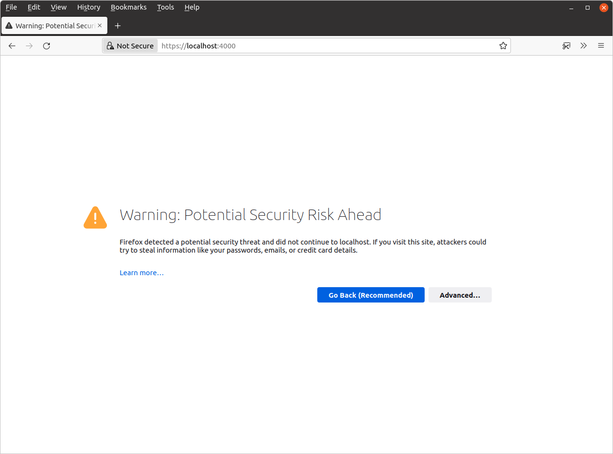
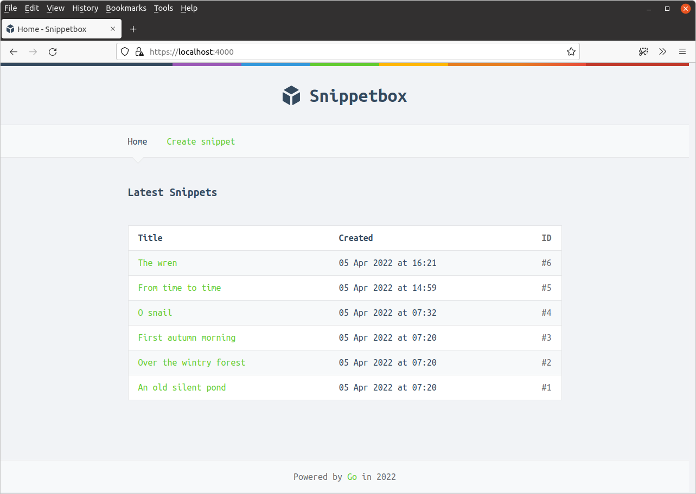
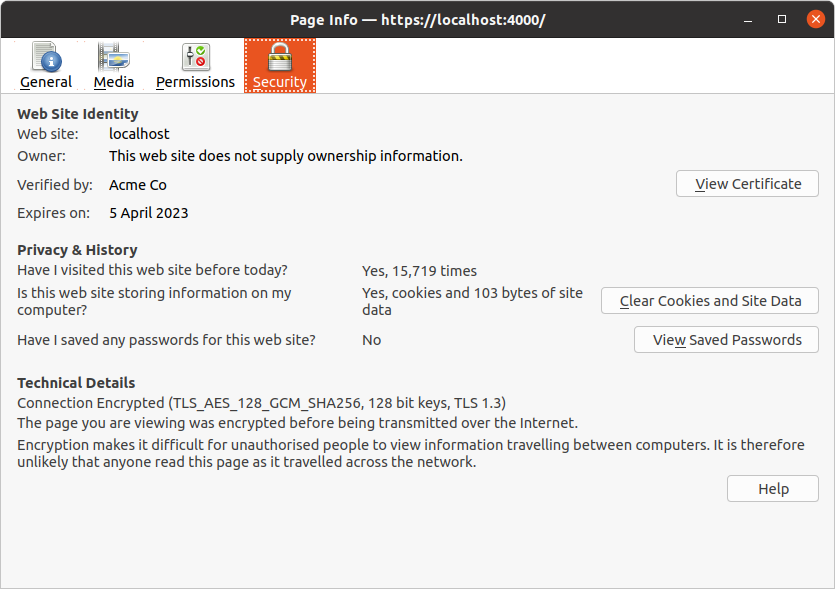
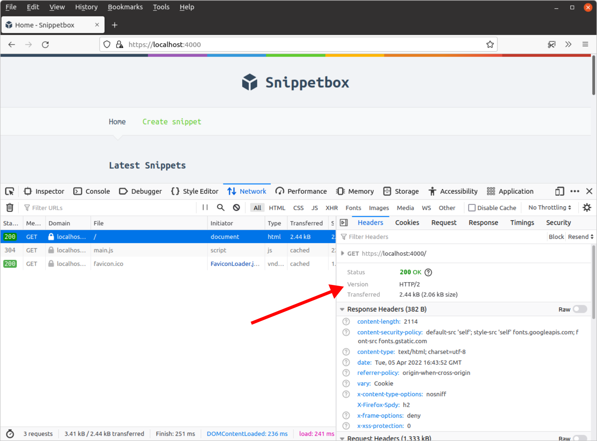

اجرای یک سرور HTTPS
اکنون که یک گواهی TLS خود امضا و کلید خصوصی مربوطه داریم، شروع یک سرور وب HTTPS بسیار ساده است — فقط باید فایل main.go را باز کرده و متد srv.ListenAndServe() را با srv.ListenAndServeTLS() جایگزین کنیم.
فایل main.go خود را به کد زیر تغییر دهید:
package main ... func main() { addr := flag.String("addr", ":4000", "HTTP network address") dsn := flag.String("dsn", "web:pass@/snippetbox?parseTime=true", "MySQL data source name") flag.Parse() logger := slog.New(slog.NewTextHandler(os.Stdout, nil)) db, err := openDB(*dsn) if err != nil { logger.Error(err.Error()) os.Exit(1) } defer db.Close() templateCache, err := newTemplateCache() if err != nil { logger.Error(err.Error()) os.Exit(1) } formDecoder := form.NewDecoder() sessionManager := scs.New() sessionManager.Store = mysqlstore.New(db) sessionManager.Lifetime = 12 * time.Hour // Make sure that the Secure attribute is set on our session cookies. // Setting this means that the cookie will only be sent by a user's web // browser when a HTTPS connection is being used (and won't be sent over an // unsecure HTTP connection). sessionManager.Cookie.Secure = true app := &application{ logger: logger, snippets: &models.SnippetModel{DB: db}, templateCache: templateCache, formDecoder: formDecoder, sessionManager: sessionManager, } srv := &http.Server{ Addr: *addr, Handler: app.routes(), ErrorLog: slog.NewLogLogger(logger.Handler(), slog.LevelError), } logger.Info("starting server", "addr", srv.Addr) // Use the ListenAndServeTLS() method to start the HTTPS server. We // pass in the paths to the TLS certificate and corresponding private key as // the two parameters. err = srv.ListenAndServeTLS("./tls/cert.pem", "./tls/key.pem") logger.Error(err.Error()) os.Exit(1) } ...
وقتی این را اجرا میکنیم، سرور ما همچنان در پورت 4000 گوش میدهد — تنها تفاوت این است که اکنون به جای HTTP، HTTPS صحبت میکند.
به صورت عادی آن را اجرا کنید:
$ cd $HOME/code/snippetbox $ go run ./cmd/web time=2024-03-18T11:29:23.000+00:00 level=INFO msg="starting server" addr=:4000
اگر مرورگر وب خود را باز کنید و به https://localhost:4000/ بروید، احتمالاً یک هشدار مرورگر دریافت خواهید کرد زیرا گواهی TLS خود امضا است، مشابه تصویر زیر.

- اگر مانند من از فایرفاکس استفاده میکنید، روی "پیشرفته" سپس "پذیرش ریسک و ادامه" کلیک کنید.
- اگر از کروم یا کرومیوم استفاده میکنید، روی "پیشرفته" و سپس لینک "ادامه به localhost (ناامن)" کلیک کنید.
بعد از آن، صفحه اصلی برنامه باید ظاهر شود (اگرچه همچنان در نوار URL هشدار خواهد داشت).
در فایرفاکس، باید شبیه به این باشد:

اگر از فایرفاکس استفاده میکنید، پیشنهاد میکنم Ctrl+i را فشار دهید تا اطلاعات صفحه برای صفحه اصلی خود را بررسی کنید:

بخش 'امنیت > جزئیات فنی' در اینجا تأیید میکند که اتصال ما رمزگذاری شده و به درستی کار میکند.
در مورد من، میتوانم ببینم که نسخه TLS 1.3 استفاده میشود و مجموعه رمز برای اتصال HTTPS من TLS_AES_128_GCM_SHA256 است. در فصل بعدی بیشتر در مورد مجموعههای رمز صحبت خواهیم کرد.
اطلاعات اضافی
درخواستهای HTTP
مهم است که توجه داشته باشید که سرور HTTPS ما فقط از HTTPS پشتیبانی میکند. اگر سعی کنید یک درخواست HTTP معمولی به آن ارسال کنید، سرور به کاربر یک وضعیت 400 Bad Request و پیام "Client sent an HTTP request to an HTTPS server" ارسال میکند. هیچ چیزی ثبت نخواهد شد.
$ curl -i http://localhost:4000/ HTTP/1.0 400 Bad Request Client sent an HTTP request to an HTTPS server.
اتصالات HTTP/2
یکی از مزایای بزرگ استفاده از HTTPS این است که Go به طور خودکار اتصال را به HTTP/2 ارتقا میدهد اگر مشتری از آن پشتیبانی کند.
این خوب است زیرا به این معنی است که در نهایت صفحات ما برای کاربران سریعتر بارگذاری میشوند. اگر با HTTP/2 آشنا نیستید، میتوانید یک مرور کلی از اصول و نحوه پیادهسازی آن در پشت صحنه در Go را در این گفتگوی GoSF meetup توسط برد فیتزپاتریک دریافت کنید.
اگر از نسخه بهروز فایرفاکس استفاده میکنید، باید بتوانید این را در عمل ببینید. Ctrl+Shift+E را فشار دهید تا ابزارهای توسعهدهنده باز شود، و اگر به هدرهای صفحه اصلی نگاه کنید، باید ببینید که پروتکل استفاده شده HTTP/2 است.

مجوزهای گواهی
مهم است که توجه داشته باشید که کاربری که از آن برای اجرای برنامه Go خود استفاده میکنید باید مجوز خواندن برای هر دو فایل cert.pem و key.pem داشته باشد، در غیر این صورت ListenAndServeTLS() یک خطای permission denied برمیگرداند.
به طور پیشفرض، ابزار generate_cert.go مجوز خواندن را به همه کاربران برای فایل cert.pem اعطا میکند اما مجوز خواندن را فقط به مالک فایل key.pem میدهد. در مورد من، مجوزها به این شکل هستند:
$ cd $HOME/code/snippetbox/tls $ ls -l total 8 -rw-rw-r-- 1 alex alex 1090 Mar 18 16:24 cert.pem -rw------- 1 alex alex 1704 Mar 18 16:24 key.pem
به طور کلی، ایده خوبی است که مجوزهای کلیدهای خصوصی خود را تا حد ممکن محدود نگه دارید و اجازه دهید فقط توسط مالک یا یک گروه خاص خوانده شوند.
کنترل نسخه
اگر از یک سیستم کنترل نسخه (مانند Git یا Mercurial) استفاده میکنید، ممکن است بخواهید یک قانون نادیدهگیری اضافه کنید تا محتوای دایرکتوری tls به طور تصادفی متعهد نشود. به عنوان مثال، با Git:
$ cd $HOME/code/snippetbox $ echo 'tls/' >> .gitignore